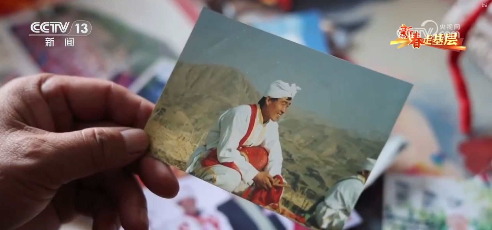
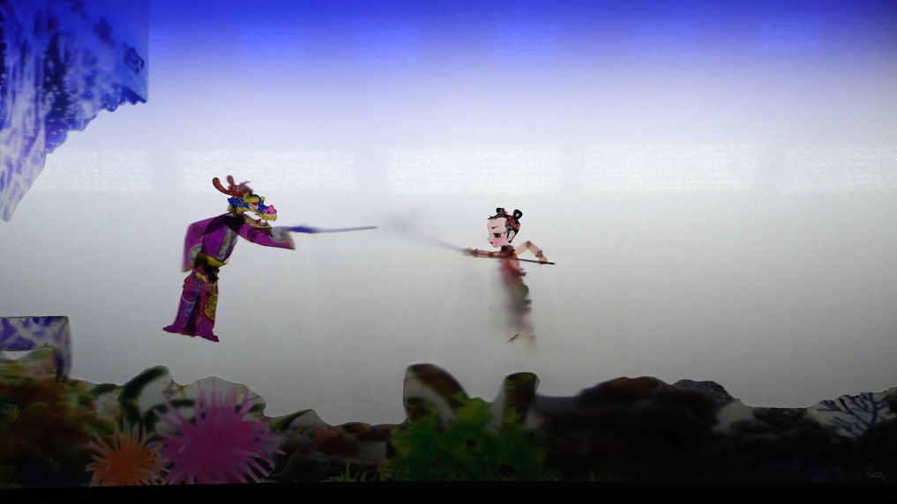
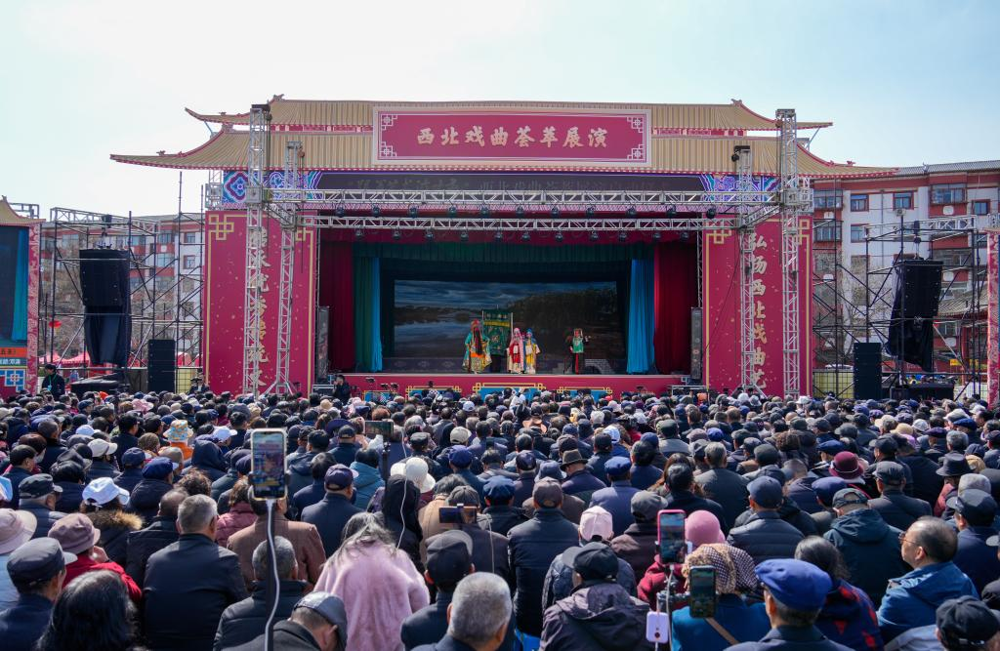
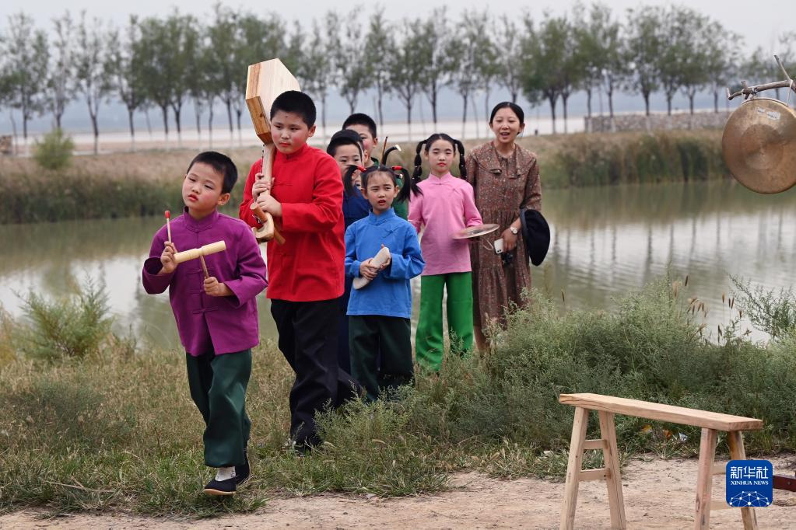
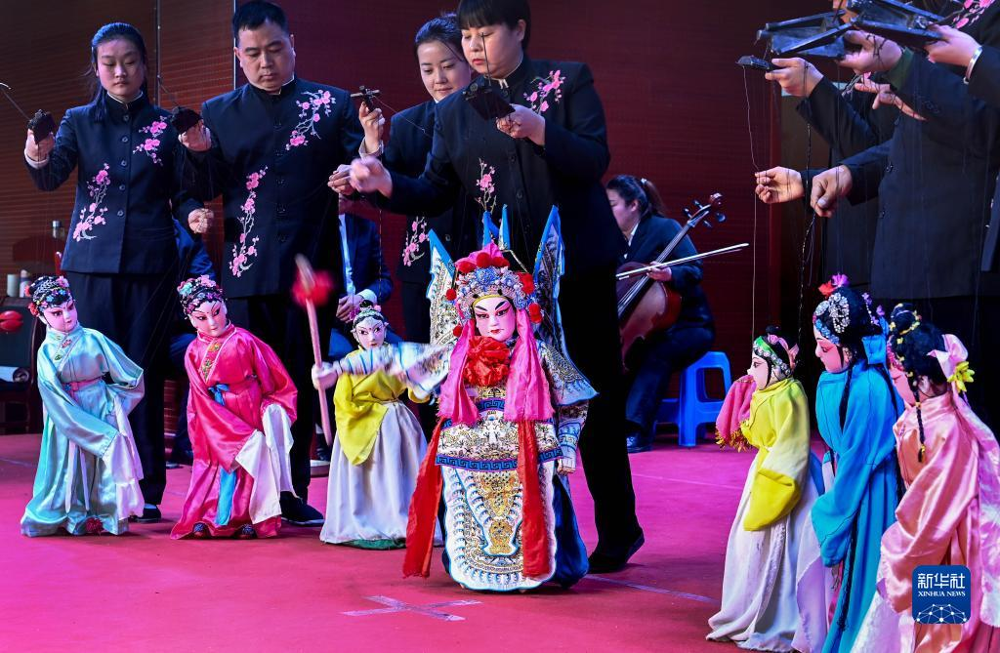
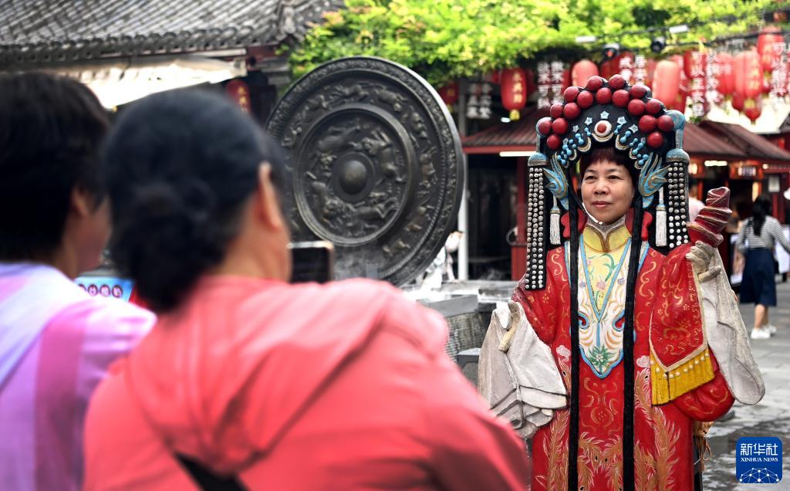
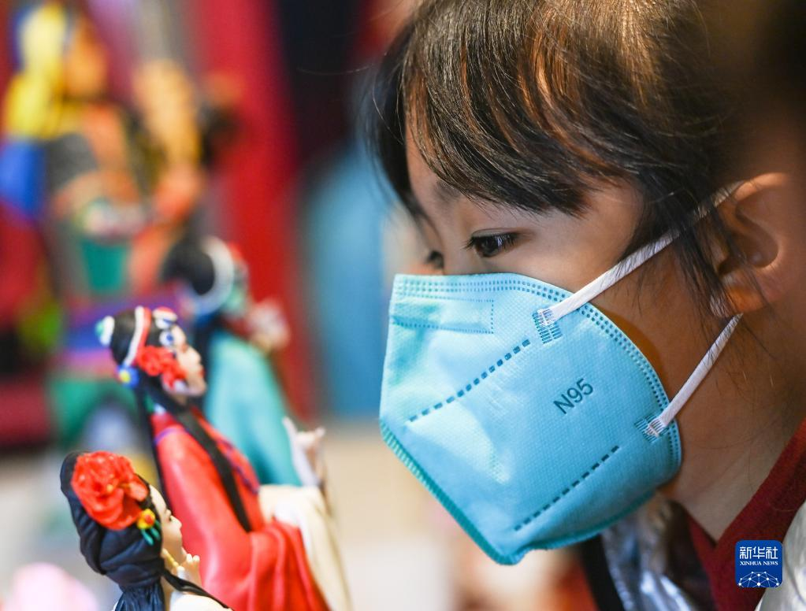
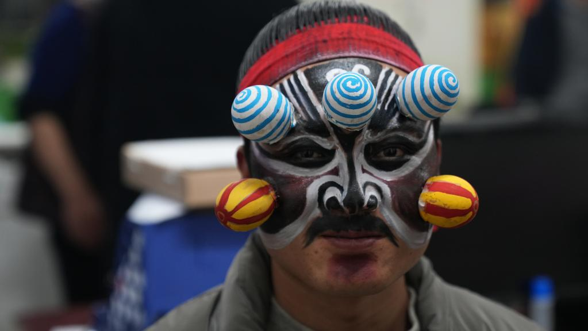
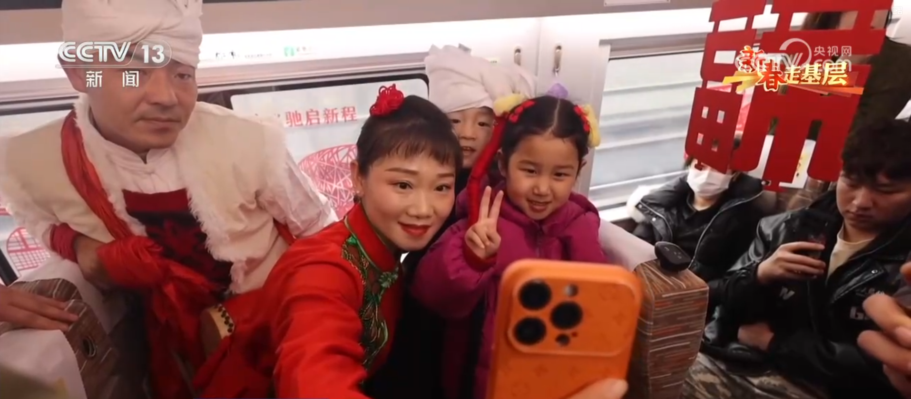

安塞腰鼓
鼓点一起，队伍就往前推。红鼓、白头巾和黄土地挤在同一个画面里，陕北的年味一下就出来了。
传统舞蹈陕北
正在发生的现场

鼓点一起，队伍就往前推。红鼓、白头巾和黄土地挤在同一个画面里，陕北的年味一下就出来了。

一张牛皮、一盏灯、一方白幕，人物就能开口说故事。真正费功夫的地方，在刻线、染彩和一根根操纵杆上。
凤翔泥塑不靠光滑取胜，靠的是粗朴的轮廓和大胆的颜色。虎、龙、生肖一摆出来，就有了关中的年节气。
陕西非遗地图
从延安的腰鼓、渭南的老腔与皮影，到宝鸡的泥塑和关中的秦腔，地域就是陕西非遗最清晰的入口。
关中声浪
唱腔、鼓点、弦板和人声交错起来，古老技艺有了当代现场的热度。

一声拖腔压住全场，关中人的豪迈从台口奔出来。

板凳、月琴和吼声相撞，粗粝里带着力量。

线一提，衣袖翻飞，小小戏台也有大天地。
千年回声
陕西的非遗不是静止的陈列。它从周秦汉唐的历史土层里走来，也从关中村社、陕北节庆、渭河岸边和秦岭北麓的民间生活里长出来。秦腔的高腔、老腔的帮唱、西安鼓乐的古谱、华州皮影的灯幕、凤翔泥塑的彩绘、安塞腰鼓的奔腾，合在一起，构成了陕西最有辨识度的文化声场。
在古长安及周边地区，礼乐、庙会、乐社和民间演出长期交织。西安鼓乐保存着庞大的曲目和古老的乐谱传统，部分曲名与唐代大曲、唐宋燕乐和教坊音乐相呼应；秦腔则在关中民间音乐、方言声腔和戏曲舞台之间成形，明清以后随商旅足迹远行，影响了多个地方剧种。
秦腔有欢音、苦音之分，板式和行当完整，唱腔高亢激越，舞台上兼有唱念做打和工架特技。华阴老腔以民间说书和皮影演唱为底色，明末清初逐渐成形，一人领唱、众人帮腔，檀板和惊木把渭河岸边的粗粝气息推到台前。
皮影戏以兽皮或纸板剪刻人物，借灯光投影演故事。宋代城市瓦舍中已有成熟影戏，历经宋、金、元、明的发展，到清代更加繁盛。华县皮影把雕刻、染色、唱腔和操纵合成一门完整技艺，一方白幕能容纳家国故事，也能照见民间审美。
凤翔泥塑以十二生肖、虎、脸谱、挂片和历史人物见长。黑粘土入模成形，白粉打底，再以大红、大绿、大黄铺开喜庆色彩。它原本贴近祈福、镇宅和节令生活，造型夸张质朴，却有强烈的民间装饰力量。
安塞腰鼓在陕北生产、祭祀、节庆和群众舞蹈中不断转换角色。关于它的起源，民间常把鼓声与古代军阵、祭天祈丰和乡土庆典相连；进入现代舞台后，腰鼓把集体性的步伐、呐喊和鼓点放大，成为陕北精神气质最鲜明的视觉符号之一。
非遗入城

灯火、人潮、手作摊位连成一片，传统技艺走进年轻人的周末。

腰鼓、剪纸、说书和民歌同台，黄土高原的气息扑面而来。

锣鼓开路，彩面登场，一条街都被年俗点亮。

红绸翻飞，脚步落地，陕北的热烈有了清晰的节奏。
沉浸旅程
让鼓声、灯影、泥彩和老腔在同一段旅程里相遇。